Streaming & Live Editing
T.A.T.V.
Temporary Autonomous Tele Vision — a micro-republic transmitting live concerts, performances and talks. Everything filmed live and programmed in real time, where the "behind the scenes" melts into the staged. Six editions, publicly funded three times.
From the stream
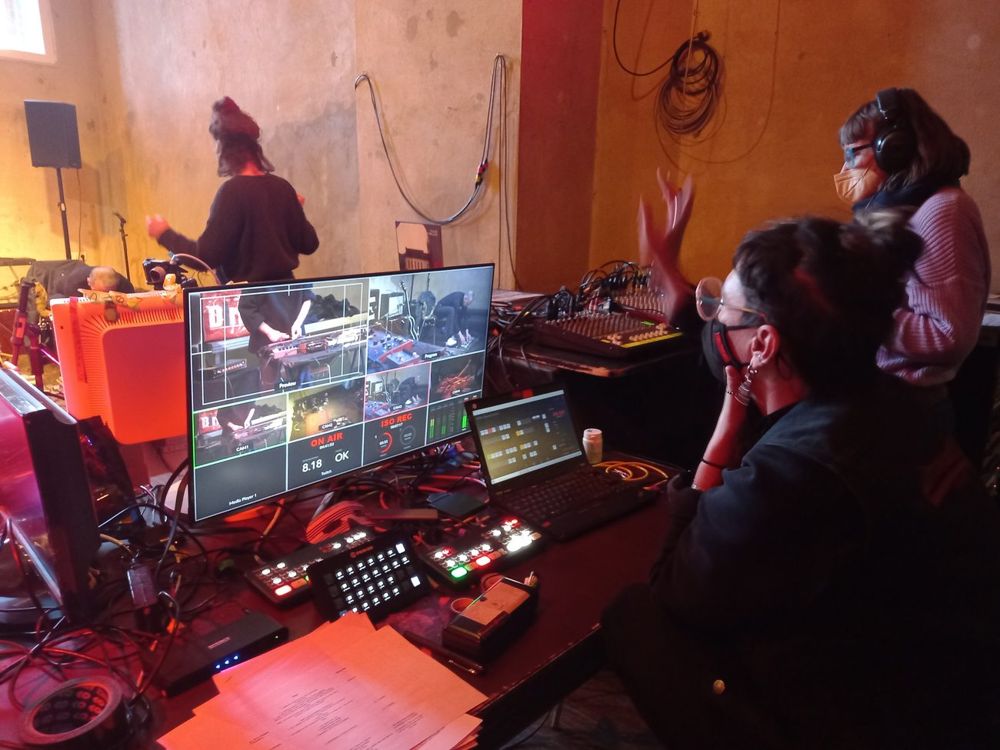

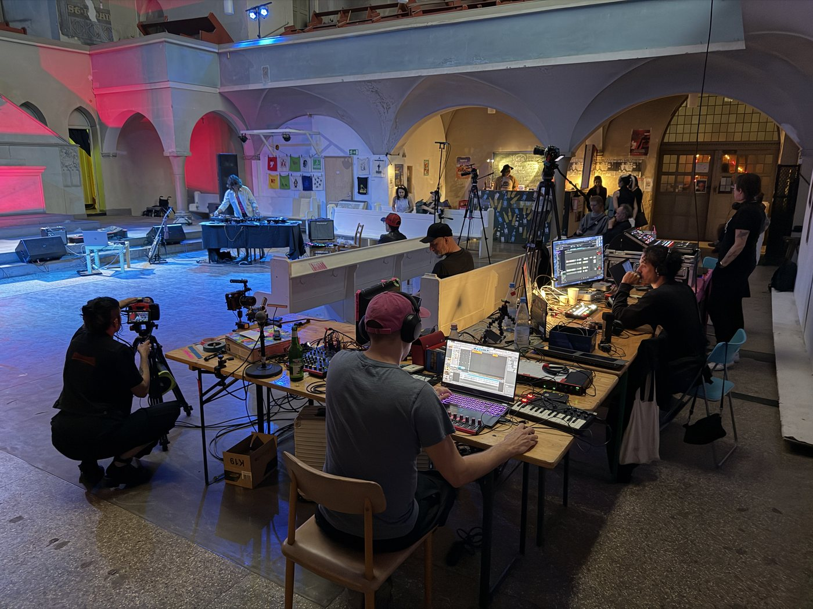
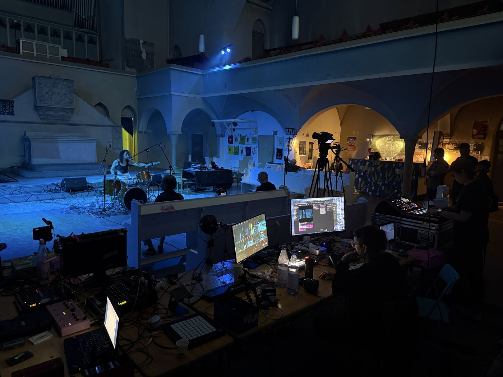
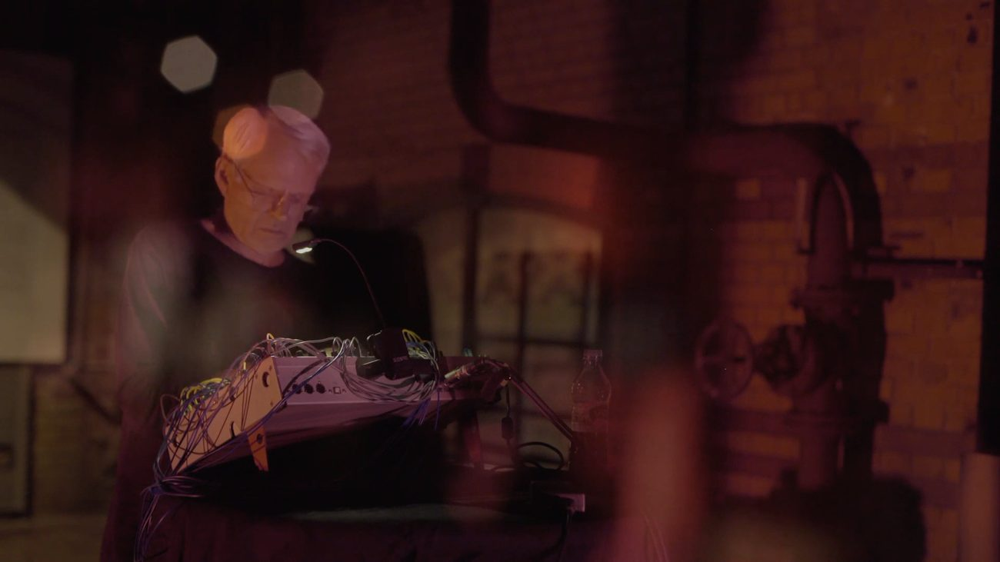
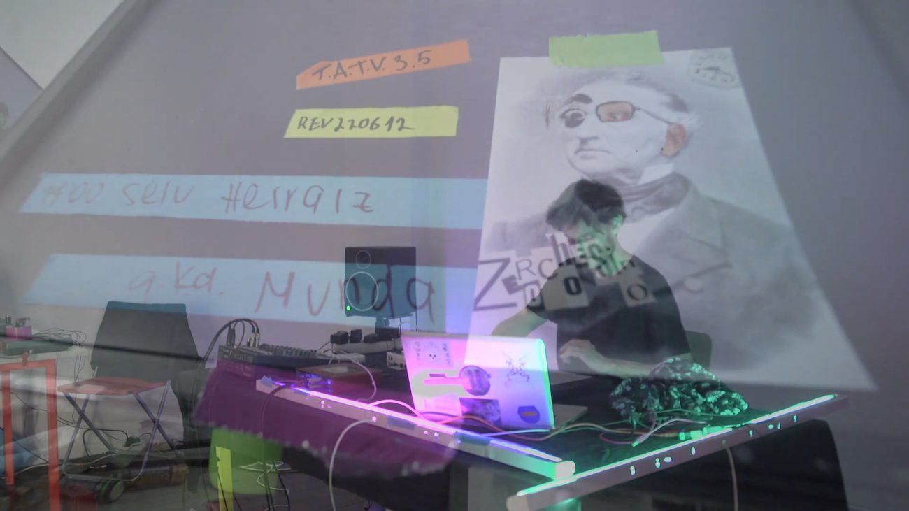
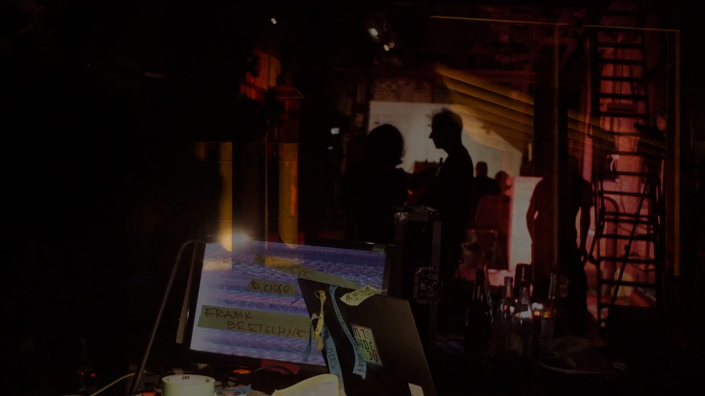
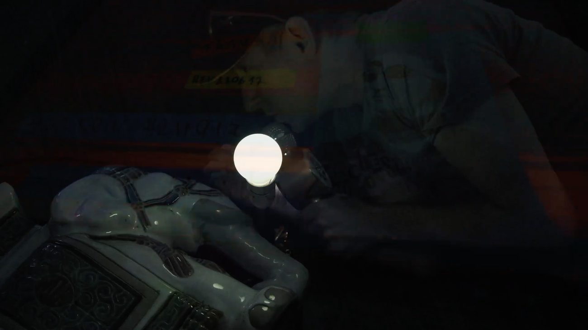


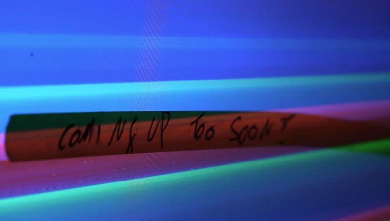
Editions
Posters designed by Mariana Hoyos.
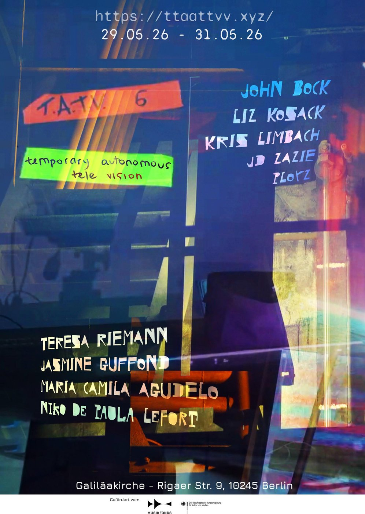
T.A.T.V. 6 Latest
29–31 May 2026 · Galiläakirche, Rigaer Str. 9, Berlin
The sixth edition, transmitted live from the Galiläakirche in Friedrichshain. Three days of concerts, performances and talks streamed in real time.
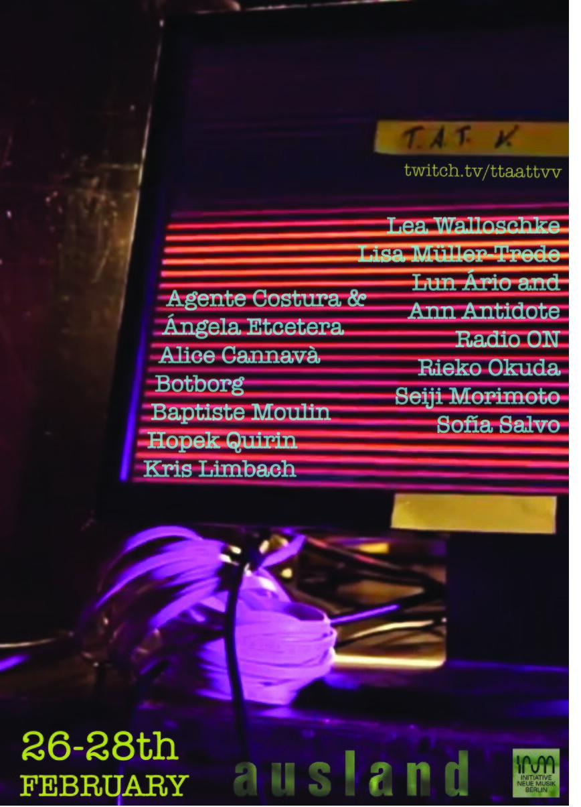
T.A.T.V. at ausland
26–28 February · ausland, Berlin
Three nights of live-streamed sound and performance from ausland, transmitted on Twitch.
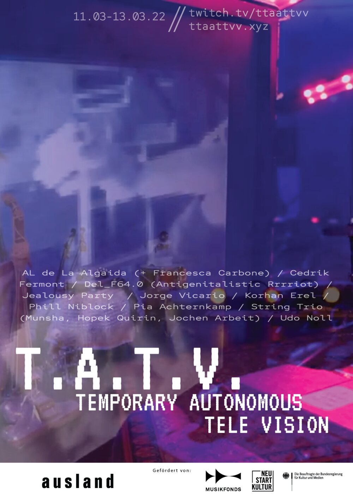
Temporary Autonomous Tele Vision
11–13 March 2022 · ausland, Berlin
A three-day transmission gathering experimental music and radio artists, streamed live on Twitch and ttaattvv.xyz.
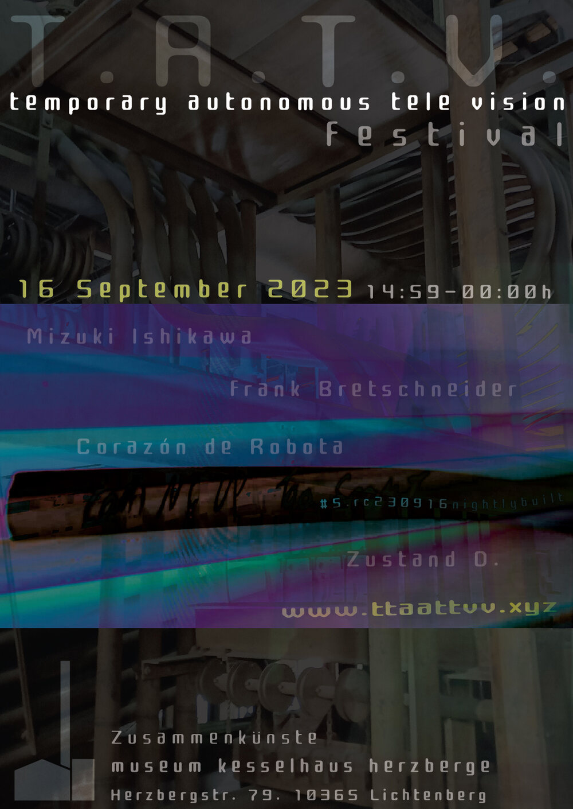
T.A.T.V. Festival
16 September 2023 · Museum Kesselhaus Herzberge, Berlin
A full-day festival edition — nine hours of live transmission from the industrial halls of Kesselhaus Herzberge, part of Zusammenkünste.